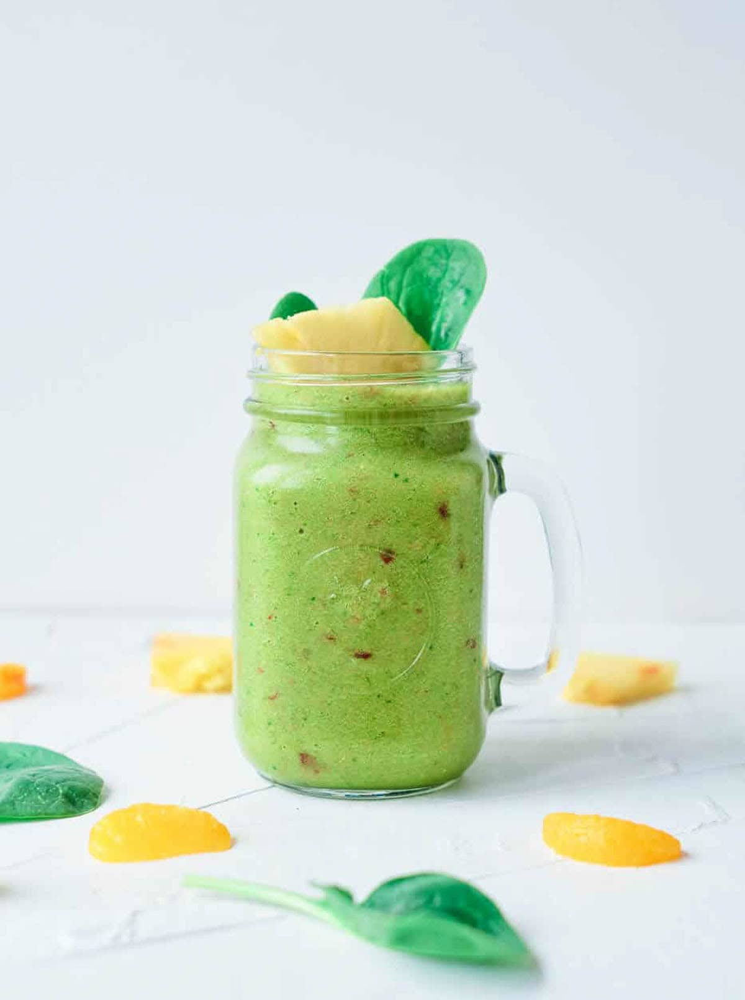

Healthy Kids Snacks
Simple, nutritious snack ideas that are perfect for kids and easy
for busy moms to prepare.
Snack Ideas
- Sliced fruits with yogurt dip
- Peanut butter and apple slices
- Mini sandwiches with whole wheat bread
- Boiled eggs with a pinch of salt
- Homemade popcorn
How to Prepare
- Wash and cut fruits into bite-size pieces.
- Prepare dips or spreads ahead of time.
- Store snacks in containers for quick access.
- Serve fresh or pack for school lunches.
💡 Mom Tip: Prep snacks on weekends to save time during the week.